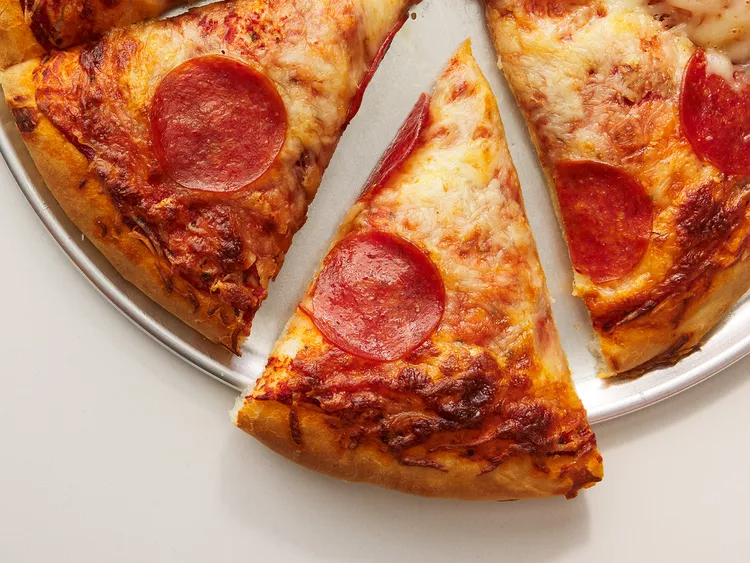

Pepperoni

Description:
This pepperoni pizza recipe produces a quick and easy classic! Delicious homemade pizza crust and tomato sauce have never been easier.
Ingredients:
- 1/2 cup water
- 1 teaspoon dried oregano, crushed
- 1 teaspoon dried basil, crushed
- 1 cup shredded mozzarella cheese, or more to taste
- 1 (6 ounce) package Hormel Pepperoni
Steps:
- Preheat the oven to 425 degrees F (220 degrees C). Grease two 12-inch pizza pans.
- Whisk together water, tomato paste, oregano, basil, garlic powder, onion powder, sugar, salt, and pepper in a medium bowl until smooth. Set aside.
- Combine 2 cups flour, yeast, sugar, and salt in a large bowl. Add warm water and oil;
- Divide dough in half. Lightly flour your hands, then pat each piece of dough onto the prepared pizza pans.